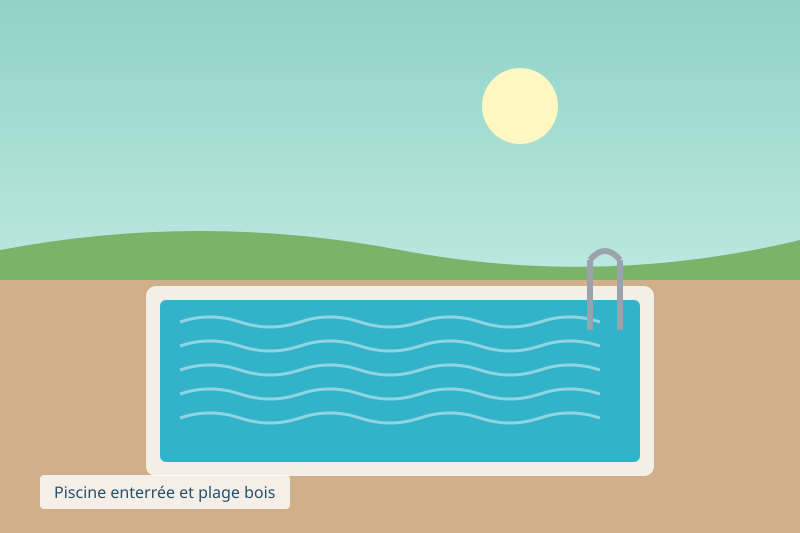
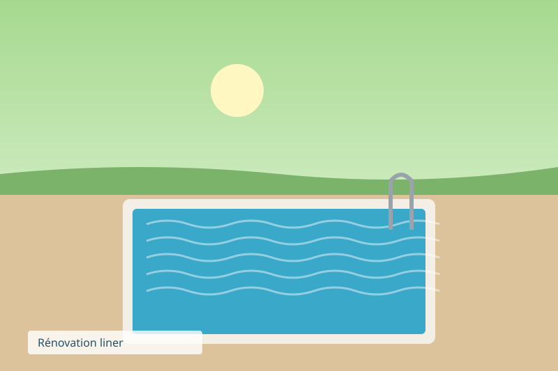

Nos réalisations
Voici quelques chantiers réalisés ces dernières années dans la vallée de la Lys.

Bassin familial 8x4, liner bleu, plage en bois exotique.

Bassin à débordement avec vue sur la vallée.

Piscine enterrée et plage bois.

Rénovation complète d'un liner de 1995.